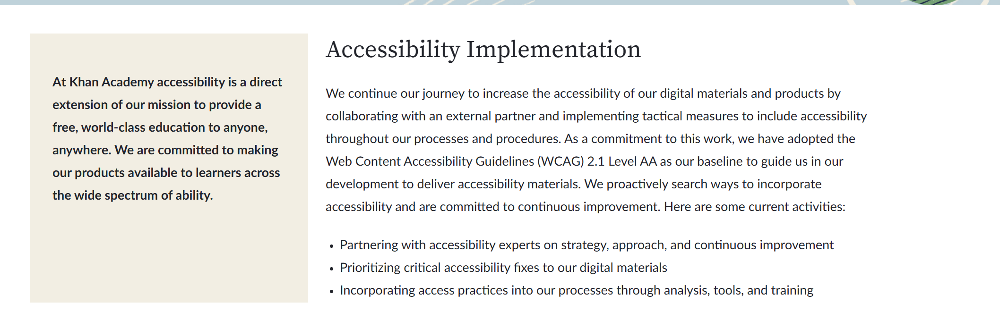

Screenshot of Khan Academy
alt="Screenshot of Khan Academy" height="2343" width="1338">
Screenshot of Khan Academy Attributes

Evaluation Details
- What is the URL of the website?
- The URL of the website is https://www.khanacademy.org/.
- What is the name of the website?
- The name of the website that I chose to evaluate is Khan Academy.
- Who is the site's target audience?
- The site's intended audience is Public school students of all grades.
- How is the site organized?
- How Khan Academy is organized is it uses hierarchical organization which
has a home page and sections for different subjects like math and history. Also, the
site has sections for each different grade level.
- Which CRAP Design Principle does it use? Provide at least one example.
- One CRAP design principle that Khan Academy uses is Proximity. For example, the Social
studies heading has different sections that teaches different types of histories which
include Units.
- What is the Audit Score according to the Accessibility Checker?
- The Audit score for Khan Academy is an 95% according to the Accessibility Checker.
- What is the site's effectiveness?
- The site's effectiveness is definitely amazing and it has a lot of tutorials
for young kids to be ready for school and gives everyone a chance to have an education
for free.
- What is the site's efficiency?
- When signing up to the website, they ask you if you are a teacher, student, or parent
which gives them a certain level of learning they are and offers an AI tutor in case
people are in trouble.
- How is the engagement?
- The engagement I would say is efficient because kids and adults around the globe use this
website for educational purposes as a learning tool.
- Recommendation to improve the website:
- One recommendation is making a virtual chat section where they can interact
with other students just like a real classroom.